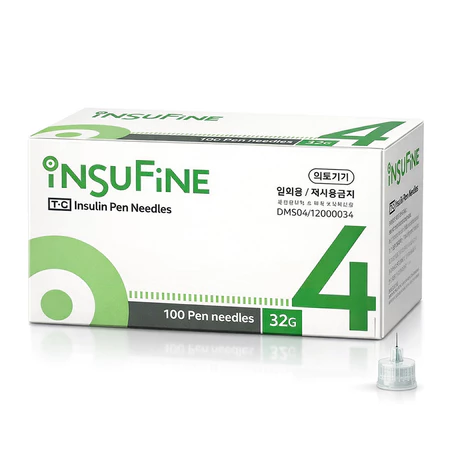
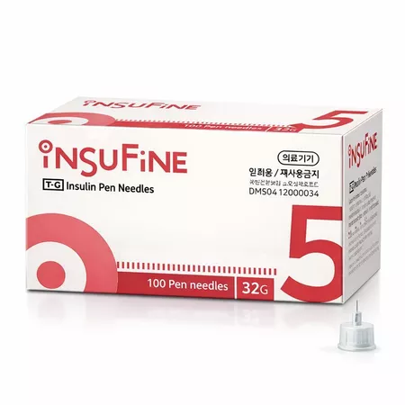
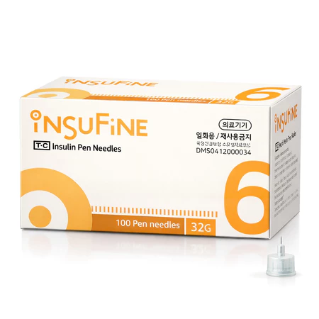
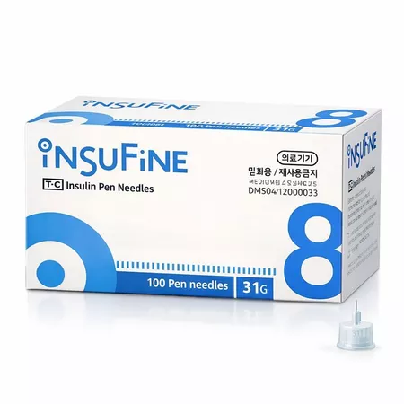
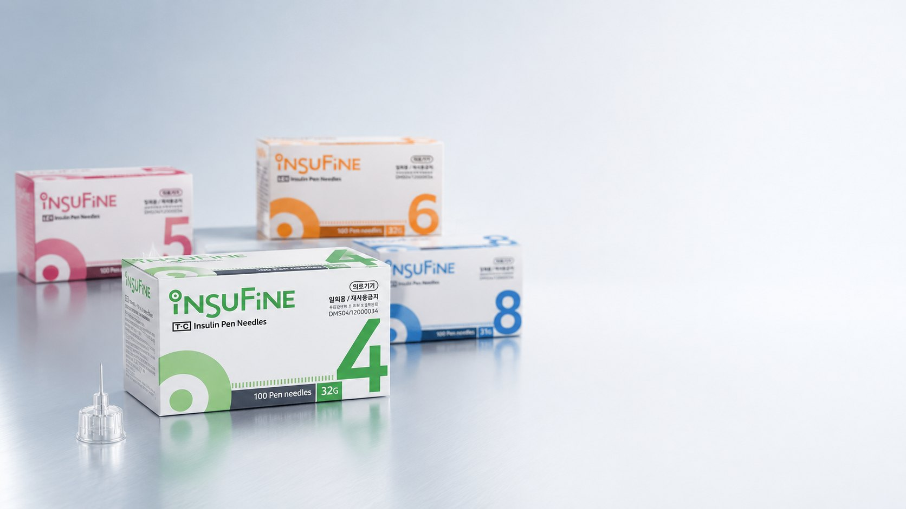

Shortest option

E-MAIL: sales@kpicktradingcorp.com

Insulin Pen Needles by Tae-Chang Industrial
Insufine sterile, single-use insulin pen needles are manufactured by Tae-Chang Industrial Co., Ltd., a Korean medical needle maker operating since 1991 and exporting to more than 50 countries. Every needle is produced from SUS 304 stainless steel tube with an electro-polished tip and a medical-grade siliconized surface for a smoother, more comfortable injection, and is designed to fit widely used insulin pen models.
K-Pick Trading Corp is the exclusive distributor of Insufine in the Philippines, supplying pharmacies, clinics, hospitals, resellers, and diabetes care retailers with 31G and 32G pen needles in 4mm, 5mm, 6mm, and 8mm lengths, packed 100 pen needles per box.
Choose the needle length that fits the patient profile and injection technique. All sizes are sterile, single-use, and packed 100 pen needles per box.




Insufine insulin pen needles are manufactured by Tae-Chang Industrial under internationally certified quality management systems for medical device production.
Manufactured under an ISO 13485-certified quality management system for medical devices.
Insufine pen needles carry CE 0120 marking for conformity with European medical device requirements.
Korean Good Manufacturing Practice approval covering Tae-Chang’s medical needle production.
Pen needles comply with the ISO 11608 standard for needle-based injection systems.
Certification documentation is available upon formal request. Contact us at kpickmedicalmarketing@gmail.com for verification.

Insufine pen needles combine fine 31G–32G gauges with electro-polished, triple-bevel needle tips and extra-thin-wall technology for maximum flow rate — engineered by Tae-Chang Industrial for a smoother, more comfortable injection experience in daily diabetes care.
K-Pick Trading Corp is the exclusive Philippine distributor of Insufine, supplying pharmacies, clinics, hospitals, and reseller buyers nationwide. Contact us or generate a quote directly.
Serving hospitals · clinics · pharmacies · dealers across the Philippines